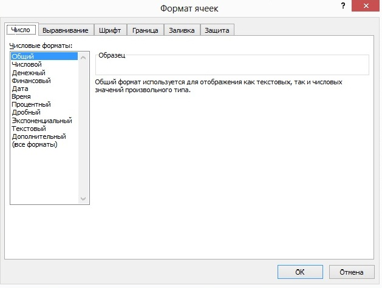
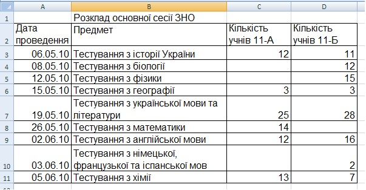
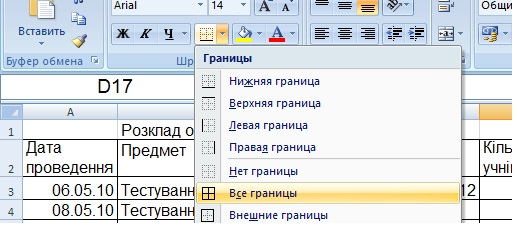

Вправа 1.1. Створення розкладу основної сесії ЗНО
Створимо розклад основної сесії ЗНО. Після введення та форматування даних таблиця має бути такого вигляду, як показано на рис.1.21.
- Запустіть програму Excel і відразу збережіть новий документ на диску, надавши йому змістовне ім'я. Для цього натисніть кнопку "Office"
 Зберегти
Зберегти  , у вікні Збереження документа виберіть потрібну папку, у полі Ім'я файлу ведіть Вправа_1_1.xlsx і клацніть кнопку Зберегти.
, у вікні Збереження документа виберіть потрібну папку, у полі Ім'я файлу ведіть Вправа_1_1.xlsx і клацніть кнопку Зберегти. - Виділіть усі клітинки таблиці та з групи Шрифт вкладки Основне виберіть із розкривного списку шрифт Arial і розмір шрифту 14 пт.
- Створіть назву і шапку таблиці.
- Виділіть клітинку В1, введіть до неї назву таблиці, Розклад основної сесії ЗНО, і натисніть клавішу Enter.
- Виділіть клітинку А2, введіть до неї текст Дата проведення та натисніть клавішу Tab та
 .
. - Введіть у клітинку В2 текст Предмет, у клітинку С2 – Кількість учнів 11-А класу, у клітинку D2 – Кількість учнів 11-Б класу, завершуючи введення клавішею Tab.
- Виділіть діапазон А2:D11, відкрийте вікно Формат клітинок, перейдіть на вкладку Вирівнювання та встановіть прапорець переносити по словах. Це дасть змогу розмістити текст у клітинці в декілька рядків.
- Розширте стовпці A, B, C, D, щоб шапка таблиці набула такого вигляду, як на рис. 1.21. Для цього захопіть мишею праву межу заголовка стовпця (курсор набуде вигляду вертикальної риски з двома стрілками) і відтягніть її праворуч так, щоб написи вміщувалися в одному або двох рядках (див. зразок).
- Задайте для першого стовпця формат даних Дата.
- Виділіть діапазон А3:А11. У контекстному меню діапазону виберіть команду Формат клітинок і в однойменному вікні, що відкриється, перейдіть на вкладку Число.
- У списку Числові формати виберіть формат Дата, а в списку Тип - тип подання дати у вигляді ЧЧ.ММ.РР (рис. 1.22), після цього клацніть ОК.
- У клітинки А3:А11 введіть дати проведення тестування.

Pис. 1.22. Установлення формату клітинок Дата - Заповніть діапазон В3:D11, увівши у клітинки текст, поданий на рис. 1.21.
- За допомогою кнопки
 (Межі) групи Шрифт вкладки Основне (рис. 1.23) установіть межі клітинок, попередньо виділивши діапазон А2:D11. Збережіть таблицю за допомогою кнопки (Зберегти) або клавіш Ctrl+S.
(Межі) групи Шрифт вкладки Основне (рис. 1.23) установіть межі клітинок, попередньо виділивши діапазон А2:D11. Збережіть таблицю за допомогою кнопки (Зберегти) або клавіш Ctrl+S.

Pис. 1.21. Електронна таблиця розкладу основної сесії ЗНО
Pис. 1.21. Електронна таблиця розкладу основної сесії ЗНО

Pис. 1.23. Установлення меж для клітинок отриманої таблиці
Pис. 1.23. Установлення меж для клітинок отриманої таблиці